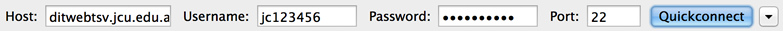
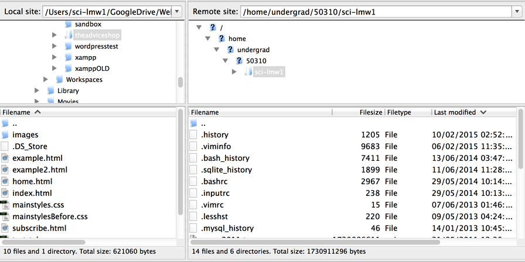
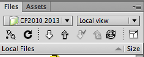

index.htmlYou will need to setup and use a VPN (Virtual Private Network) in order to access these servers from outside the JCU network.
Details for installing and setting up GlobalProtect to do this are found here.
You can use any FTP program that supports SFTP (Secure File Transfer Protocol) including Fetch, Cyberduck, WinSCP or... FileZilla (which is installed on the JCU computers).
We need to connect to the remote Web server using SFTP. The server name is:
If you are on your own computer, use the Site Manager (first button) to setup your site so you only have to type it once.
If you are on a lab computer, the easiest way is to enter the details in the Quickconnect section with your server, username and password (your password is the usual one for email, LearnJCU, etc.) and the port number 22, then click the big ol' button.

If you get a message about an unknown host key, just accept it - it's safe :)
You should now have two panes - your local files (left) and the remote server files. You can drag and drop files between panes or to/from Windows Explorer or Finder (Mac).
Yours will look a bit different, but it's something like:

Anything you want to publish on the Web needs to go inside a special folder called:
public_html
To start with, you will not have anything in your public_html folder on the server.
We will be using directories to separate our different sites - so create a directory for any site you want to upload... inside public_html:
Now to view it online, in a Web browser, you go to :
http://ditwebtsv.jcu.edu.au/~jc123456/me
but change:
What happened?
You can also upload directly from your editing program if you prefer...
Instructions for setting up in PHPStorm can be found at the JetBrains site here.
In Dreamweaver, choose Site > Manage Sites...
Important: You need to match the root directory of your local site with the "Root Directory" field in the server setup. (
E.g. in the screenshot above, the server root directory is public_html/me - and the site root in Dreamweaver will be a folder containing the index.html file for the "me" site.
You can now upload files and folders by clicking on them in the Files panel and then clicking the up arrow button.

If it asks if you want to put dependent files, choose Yes and it will also upload any images or CSS files that your file references (but not linked html pages).
Upload your pages, then view your site in a Web browser.
Tech Note: The following should be done for you automatically, but if not...
If you get 403 Forbidden for folders and you do want the browser to show the contents of directories that do not have an index.html/php file in them, you can create a file called .htaccess inside public_html that simply contains the following line:
Options +Indexes